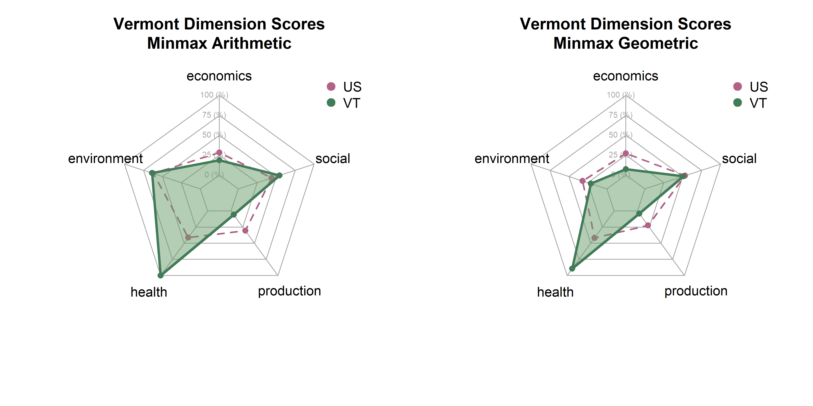
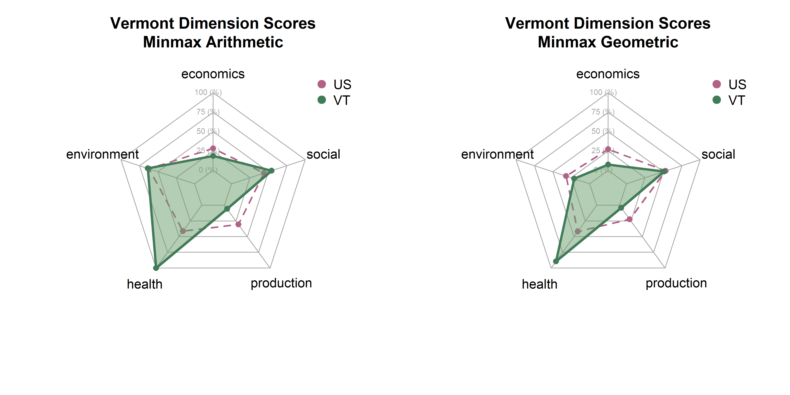

Code
pacman::p_load(
tidyr,
ggplot2,
ggpubr,
fmsb
)
# Load state score data
dat <- readRDS('data/state_score_iterations.rds')
# get_str(dat)
# Custom function to create spider plots
get_vt_spiders(dat, 'minmax')
In the last page we created six sets of scores by state based on combinations of three normalization methods (z-scores, min max, box cox) and two aggregation methods (arithmetic, geometric). Here, we will explore differences between them in terms of state distributions and rankings.
Note that each set of spider plots are scaled to the minimum and maximum of any single state in that dimension, given the normalization and aggregation methods. This means in the case of min-max normalization, for example, raw metrics are scaled from 0 to 1, arithmetic and geometric means consolidate values to dimension scores, and these sets of dimension scores are scaled on the plot from the lowest to the highest value of any state. A “perfect” score here means that it is the best of any state. Plots show dimension values for Vermont in green. The dotted purple polygon behind it is the median of US states and DC. Arithmetic means are on the left, and geometric on the right.
Be aware that spider/radar charts can be hard to interpret, and sometimes misleading The Radar Chart and its Caveats. The order of variables makes a big impact on the area of chart, and area is not a terribly reliable way to show differences, as it increases quadratically as variables increase linearly. Will explore some other ways to show this information, but using these for now as they are quite popular in the literature for sustainability metrics.
We are starting with min max normalization, which is probably the most intuitive transformation. Every metric is scaled from 0 to 1, so the lowest value from any state becomes 0, and the highest value from any state becomes 1. Indicators, indices, and dimensions are then aggregated using arithmetic or geometric means.
The transformation is easy to understand, but has some drawbacks, including being quite sensitive to outliers. Strong outliers in either direction could condense the rest of the distribution, making it seem like most states are very low or very high.

The difference in the production dimension between arithmetic and geometric averages suggests Vermont is scoring highly in some production, but low in others. Arithmetic means are fully compensable such that a high score in one area can fully make up for a low score in another. The geometric mean seems be applying quite a penalty to Vermont production here. In either case, Vermont comes out looking pretty good in terms of the health and social dimensions.
Z-scores are standardized values. We subtract the mean from every metric to center it at 0, then divide by the standard deviation to get units in terms of standard deviations. This should be more robust to outliers than the min-max method; extreme values have no effect on values. However, rescaling Z-scores to fit the spider plots might have a similar effect.
The arithmetic plot is functionally identical to the min-max plots. The difference might be in the scaling of the spider plot itself - it shouldn’t make much of a difference whether scores are on a 0-1 scale or z-score scale. The geometric will have to get dropped or reworked here - geometric means of z-scores that includes negatives doesn’t make sense. We could try logarithmic means, or skipping the centering step so that all the z-scores stay positive. Either way, I don’t find the z-scores particularly convincing, and they are less approachable than min-maxing.
The Box-Cox procedure explores a range of lambda values with which to transform a distribution, choosing the value that leads to the most “normal” distribution. It has been used on skewed sustainability indicators, sometimes before a min-max scaling procedure (Béné et al. 2019). It should have the effect of smoothing out some of the outlying data. On the other hand, since this is a non-linear transformation, it will also fundamentally change the relationships between variables.
We can see that all values are less extreme - both the lows and highs and pulled toward the center. The underlying US averages are also quite well centered. However, interpreting correlations between metrics, indicators, indices, and dimensions will be harder here.